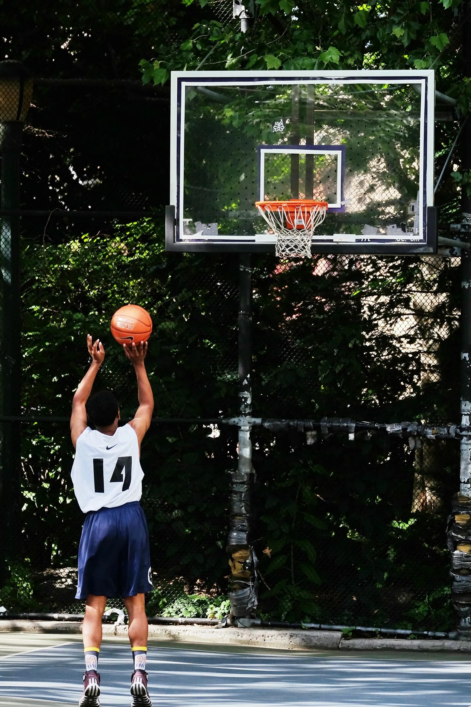

Aujourd'hui le basket, après des années de pratique, est l'un des sports les plus jouées au monde.
- 
Aujourd'hui le basket, après des années de pratique, est l'un des sports les plus jouées au monde.
Pour mieux comprendre, simplement le cas de la France, il est:
Partout où vous irez, peu importe le lieu vous trouverez des paniers de basket, voire de quoi faire du basketball. Vous pouvez jouer maintenant, quand vous voulez, il suffit juste d'avoir un ballon sous la main. Et cette réussite, de la diffusion internationale de ce sport est dûe aux efforts de tous les participants. En 2020, le NBA Paris Game 2020, a eu lieu. Une immense ferveur c'est propagés à travers les fans français de basketball. Voir un match de NBA, en saison régulière, en France, était une grande première. Il y a quelques mois, la NBA annonçait un match. Personne ne savait les équipes. Puis ils annonçèrent le match des Bucks de Milwaukee contre les Hornets de Charlotte. Ces deux grandes équipes étaient dans un tournant de l'histoire du basket. Milwaukee réalisait une saison exceptionnelle. De plus, si cette équipe fait autant parlait d'elle c'est parce que lors de la saison de Basket la star grecque impressionnait tout le monde. En effet Giannis Antetokounmpo a fait une saison exceptionnelle, il devient le deuxieme MVP européen de l'histoire. Et c'est ainsi que Giannis est rentré dans l'histoire en devenant l'un des plus grands joueurs de l'histoire. En emmenant son équipe très loin. De l'autre côté du terrain, n'oublions pas les Hornets, qui eux, on dans leur équipe le français Nicolas Batum, et le très célèbre Tony Parker.
Ce match a fait des ventes explosives, les fans impatients se sont jetés sur les places à vendre. Seulement 2 jours avant l'ouverture de la vente des billets était organisé la prévente des billets. Le mardi 22 octobres les fans recevaient un code et un lien pour la prévente. Puis le 23 octobre à 12 heures, ils pouvaient préacheter leur place. Malheuresement pour y accèder il fallait être chanceux car en effet, le mercredi 23 octobre il y avait déjà plus de 100 000 fans sur la liste d’attente pour la prévente. Ce match était donc très attendu !! C'est grâce à ce genre d'évenement que le basket peut se diffuser, de l'Amérique au reste du monde et ainsi, fédérer.